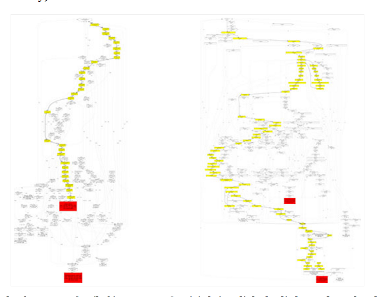

Index
- Intro: why a debugger?
- Navigating through code
- Scenario A: the visible bug
- Scenario B: the traitor
- Scenario C: The failing test
- Debugging scripts
Why a debugger?
A typical IRC discussion
JoseCarlosss> buenas a todos, a que puede ser debido que ejecuto comando de drush y funciona perfectamente y si creo un script de drush cuando ejecuto dicho script me da permiso denegado al ejecutar un comando de drush dentro del script ?
JoseCarlosss> es decir, mismo comando en script me da permiso denegado y por consola me funciona
leandro> JoseCarlosss: comprueba la ruta desde la q ejecutas el script y, dentro de éste, si se posiciona correctamente en el directorio adecuado donde tengas instalado el Drupal
JoseCarlosss> ok, lo miro aunque creo que está correcto al 99% seguro
JoseCarlosss> gracias leandro
nesimo (~mmanzano@63.red-83-55-196.dynamicip.rima-tde.net) has joined #drupal-es
e0ipso> plopesc te veré en la drupalcamp?
plopesc> yep e0ipso , llego el viernes a medio día
e0ipso> mola
e0ipso> igual que yo
JoseCarlosss> leandro, comprobado y nada
juampynr> leandro, hola! vienes a la camp?
JoseCarlosss> no es tema de rutas
JoseCarlosss> juampynr, como andas maestro ya estás por granada?
juampynr> JoseCarlosss, cómo invocas el comando desde el script? qué comando es?
juampynr> JoseCarlosss, hola! no, salgo a las 3 hoy
JoseCarlosss> es un drush make
Hours later...
JoseCarlosss> lo curioso es que en dos ordenadores funciona y un tercero no..
JoseCarlosss> no se que habrá raro ..
juampynr> JoseCarlosss, qué error recibes?
JoseCarlosss> yo tiro pallá el viernes al final
JoseCarlosss> permiso denegado
leandro> juampynr: hola ^^ no, no creo que vaya. me vienen mal las fechas.
juampynr> si es un make, entonces se está descargando módulos, no? quizás los permisos de algunos de esos directorios estén mal
juampynr> prueba a ejecutar el omando con -v -d JoseCarlosss
juampynr> eso te va a dar más info
JoseCarlosss> lo curioso es que si hago el drush make en consola sin el script me rula
juampynr> qué pena leandro
juampynr> JoseCarlosss, qué tiene de especial el script?
juampynr> el usuario de consola es el mismo que el que ejecuta el script?
JoseCarlosss> si
JoseCarlosss> tiene que ser un tema relacionado con eso
JoseCarlosss> pero n olo veo
gvso (~gvso@host-103.58.217.201.copaco.com.py) has joined #drupal-es
ajmantis has quit (Remote host closed the connection)
juampynr> JoseCarlosss, cómo se llamaba el de la tele, del de AAAAA JUGAAAAAAAR
juampynr> recuerdas?
JoseCarlosss> joaquín prat no?
juampynr> pues AAAAAAAAA DEBUGUEEAAAAAAAAAAAAAARRRR
Why does this happen?
Because the Drupal 7's call stack is quite large. And it is even larger for Drupal 8.
A simple debugger
Scenario A: The visible bug
Tips
- Set a breakpoint at the failing line.
- Reproduce the error.
- Inspect current variables. Navigate the backtrace to understand what is going on.
- If needed, set a breakpoint at a higher level of the backtrace and then reproduce the error again.
Scenario B: The traitor
Step 1: find candidates to debug
Step 2: Dig, dig, dig!
Hours later...
Tips
- Start by exploring the codebase. Set a few breakpoints and see if you hit any of them.
- When you run out of ideas, go through the request. If you pass the bug, set a breakpoint and start over.
- Repeat until you nail down what is going on.
The trickier the bug, the deeper you will dig, so the more you will learn about Drupal's internals.
Scenario C: The failing test
Debugging a Web/Kernel test
Web tests involve two sites:
- The one running the test — the parent site.
- The one receiving and returning responses — the child site.
The parent site makes cURL requests to the child site and then it evaluates the responses by making assertions.
Kernel tests use Drupal's minimal resources to test a module's API. they call the API's methods directly so there are no parent/child site interactions.
Debugging a Web's child site
Currently broken :-(.
See this core issue for further details.
Debugging a unit test
Debugging scripts
Debugging a Drush command
Some tasks, such as route definition, happen when Drush rebuilds its data structures (drush cr). Therefore, we need to be able to listen to command line connections in order to debug this logic.
The drush executable, when invoked, evaluates your OS and then launches Drush as a sub-process. Therefore, in order to debug a command, we need to skip the first step and call the Drush script directly (thanks @_jonhattan_).
Debugging a Console command
Drupal Console invokes its commands within the same process, so no tweaking is needed to debug its code.
Links
- My xdebug cli and apache2 settings.
- PhySH (via drush core-cli).
- Xdebug Traces.
- Kint (via devel module).